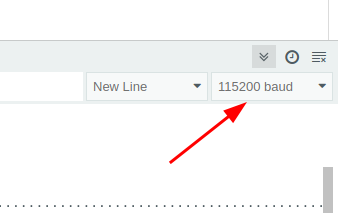
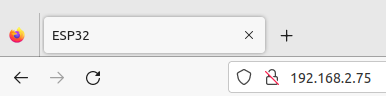

Kopiere folgenden Code in ein neues Programm:
#include <WebServer.h>
// Achtung: Mit der SSID und dem Passwort kann jeder auf dein WLAN zugreifen.
// Du darfst daher nie diesen Code mit deinem Passwort an andere Personen weitergeben!
// ****************************************************************
const char* ssid = "your-ssid"; // SSID (= Name) des WLANs
const char* password = "your-password"; // geheimes Passwort des WLANs
// ****************************************************************
const int httpPort = 80; // This should not be changed
WebServer server(httpPort); // Der ESP32 soll eine Internetseite als Server bereitstellen.
Diese Zeile bindet eine Bibliothek mit grundlegenden Befehlen für den Betrieb des ESP32 als Webserver ein. Der Mikrocontroller kann damit eine Internetseite im WLAN bereitstellen.
An Stelle von your-ssid musst du hier den Namen des WLANs eintragen, mit den du dich verbinden willst.
Auch hier muss your-password durch das geheime Passwort des WLANs ersetzt werden.
Der Warnhinweis ist sehr wichtig - mit der SSID und dem Passwort kann jeder in dein WLAN eindringen. Du darfst diese Informationen daher nie an andere Personen weitergeben.
Diese Zeile legt fest, über welchen Port die Internetdaten gesendet werden. Für normale Internetseiten ist das stets der Port 80. Dieser sollte nicht geändert werden, da der Datenaustausch sonst in der Regel blockiert wird.
Über die Variable server kannst du später die Internetseite des ESP32 erstellen.
In der setup-Methode soll sich unser ESP32 im WLAN anmelden.
Kopiere diesen Code in dein Programm:
void setup(){
Serial.begin(115200);
Serial.print("Verbindung zu WLAN: ");
Serial.println(ssid);
WiFi.begin(ssid, password);
while(WiFi.status() != WL_CONNECTED){
delay(500);
Serial.print(".");
}
Serial.println("");
Serial.println("Verbindung aufgebaut");
Serial.print("IP-Addresse des ESP32: ");
Serial.println(WiFi.localIP());
server.begin();
}
Der ESP kann Daten deutlich schneller übertragen als ein Arduino UNO. Damit der Serielle Monitor richtig funktioniert, muss auch hier die Datenrate aus 115200 Baud eingestellt werden:

Mit diesem Befehl startet der ESP32 den Aufbau einer Verbindung zu WLAN. Er verwendet hierbei die SSID und Passwort-Daten.
Solange die Verbindung noch nicht aufgebaut ist, wird auf dem seriellen Monitor ein Punkt ausgegeben. Wenn der Verbindungsaufbau nicht funktioniert, bleibt das System in dieser Schleife hängen.
Der Router des WLANs weist dem ESP32 eine lokale IP-Adresse zu. Diese Adresse wird an dieser Stelle ausgegeben. Mit der Adresse benötigen wir später um über einen Internetbrowser auf die ESP32 zuzugrifen:

Hiermit startet der ESP32 als Webserver.
Als nächstes bauen wir eine Internetseite auf, die vom ESP32 bereitgestellt wird.